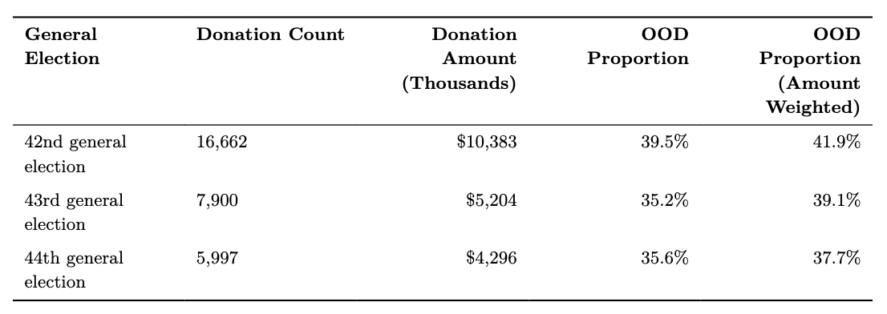
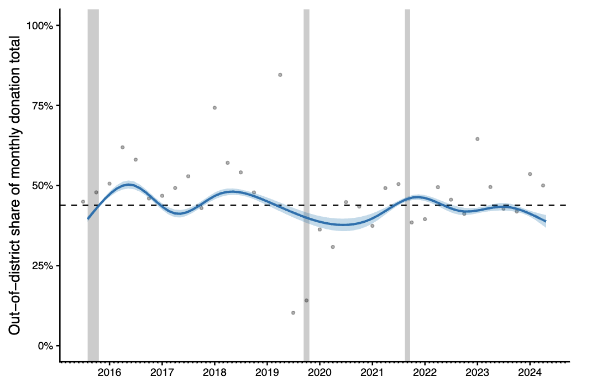
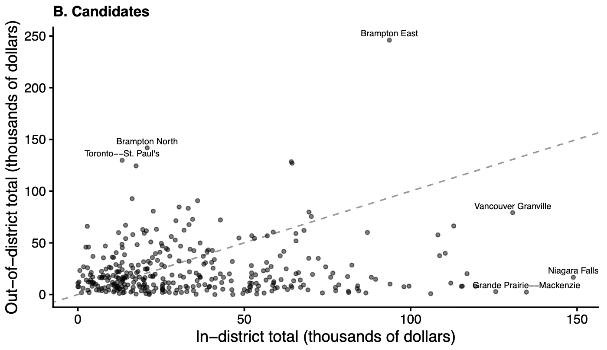
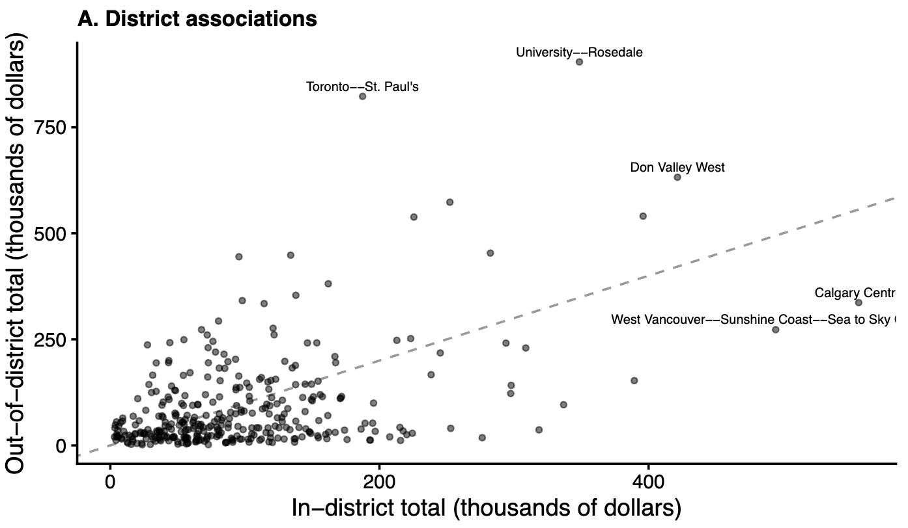
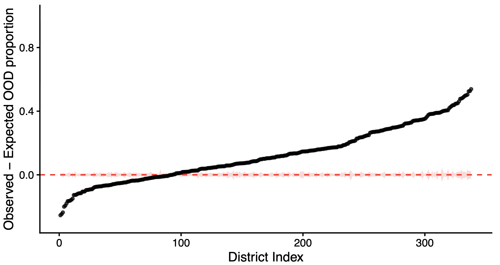
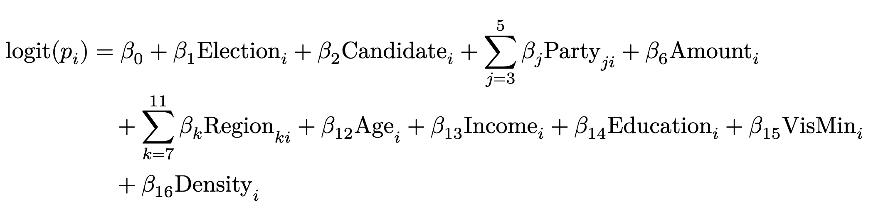
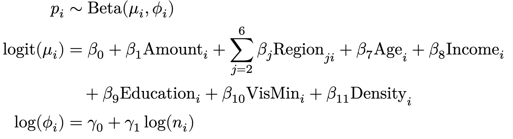
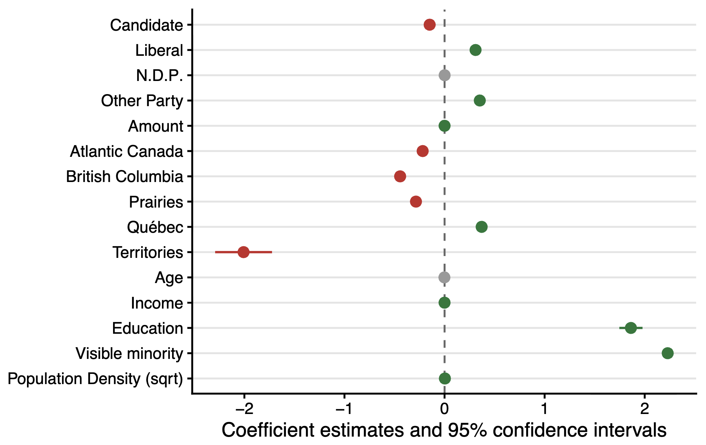
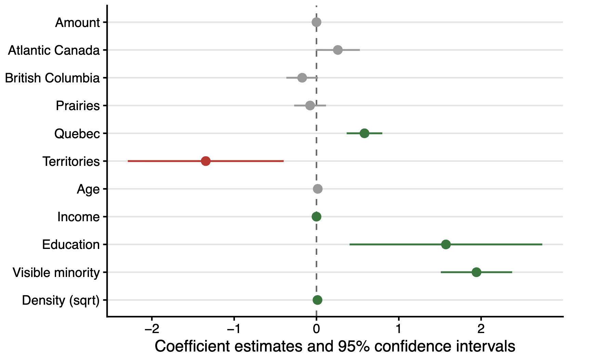
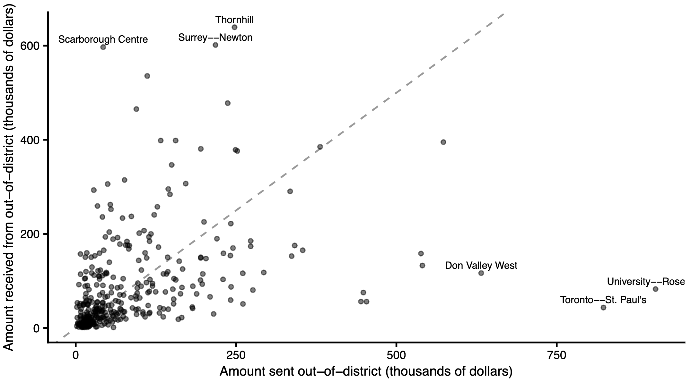

Characterizing Canadian Out-of-district Political Donations (2015 to 2024)
Benedict Cummins-Mburu
University of Toronto
Rohan Alexander
University of Toronto
July 19, 2026
Federal Representation & Donations
- In many parliamentary democracies, citizens are represented at the federal level based on where they live1.
- While voting is the most direct form of individual political participation, political donations are a versatile and impactful alternative.
- Out-of-district donations enable individuals to extend their political influence beyond their own district.
Out-of-district Donations in the U.S.
- Two-thirds of campaign funding is sourced from out-of-district, largely from a group of so-called “donor districts”.
- Studies suggest that many of these donors are motivated by partisan gain1.
- Out-of-district donations distort the relationship between a representative and their constituents2.
Our Research Process
- Document the extent of out-of-district donation in a non-American context.
- Identify shared attributes of locations where out-of-district donations more or less likely.
- Characterize the network of localized political financing formed by out-of-district donations.
Dataset
Open Data on Contributions
- Database of all federal political donations above $20, maintained by Elections Canada. Augmented with spatial and Census data from Statistics Canada.
- Analysis restricted to:
- Donations above $200 (loction-disclosed)
- Donations sent from October 2015 to April 2024
- Donations addressed to candidates1 or district associations

Results
Spatio-temporal trends in out-of-district donations rates.
Trends in Out-of-district Donations
- 38% and 44% of all donations to candidates and district associations came from out-of-district.
- Rates were relatively constant through time and across political parties.
- However, out-of-district donation rates were very different from district to district.





Results
Modelling out-of-district propensity
Modelling Out-of-district Propensity
- We used logistic regression to model whether or not an individual donation was sent out-of-district.

Modelling Out-of-district Propensity
- We used beta regression to model the share of donor-based funding that left a given district.



Results
Characterizing the network of out-of-district donations
Interdistrict Local Funding Network
- Only 50% of out-of-district donations left their immediate neighborhood.
- Only 13% of out-of-district donations (9% for candidates, 14% for district associations) left their province.
- Most important districts could be classified as senders or receivers of out-of-district donation.

Conclusion
Key Takeaways
- Out-of-district donations are a substantive and persistent feature of the Canadian localized political financing landscape.
- Out-of-district donation rates vary more from district-to-district than what their spartial arrangement alone can explain.
- Despite their prevalence, out-of-district donations remain largely bound by provincial lines.
Thank you for your attention!
References
Baker, Anne E. 2016. “Getting Short-Changed? The Impact of Outside Money on District Representation.” Social Science Quarterly 97 (5): 1096–107. https://www.jstor.org/stable/26612374.
Canes-Wrone, Brandice, and Kenneth M. Miller. 2022. “Out-of-District Contributors and Representation in the US House.” Legislative Studies Quarterly. https://csap.yale.edu/sites/default/files/files/apppw-bcwrevised-2-5-20.pdf.
Gimpel, James G., Frances E. Lee, and Shanna Pearson-Merkowitz. 2008. “The Check Is in the Mail: Interdistrict Funding Flows in Congressional Elections.” American Journal of Political Science 52 (2): 373–94. https://www.jstor.org/stable/25193819.
Nathan, Charles, Arvind Krishnamurthy, Curtis Bram, and Jason Douglas Todd. 2025. “The Donor Went Down to Georgia: Out-of-District Donations and Rivalrous Representation.” Political Behavior 47 (1): 41–60. https://doi.org/10.1007/s11109-024-09940-y.